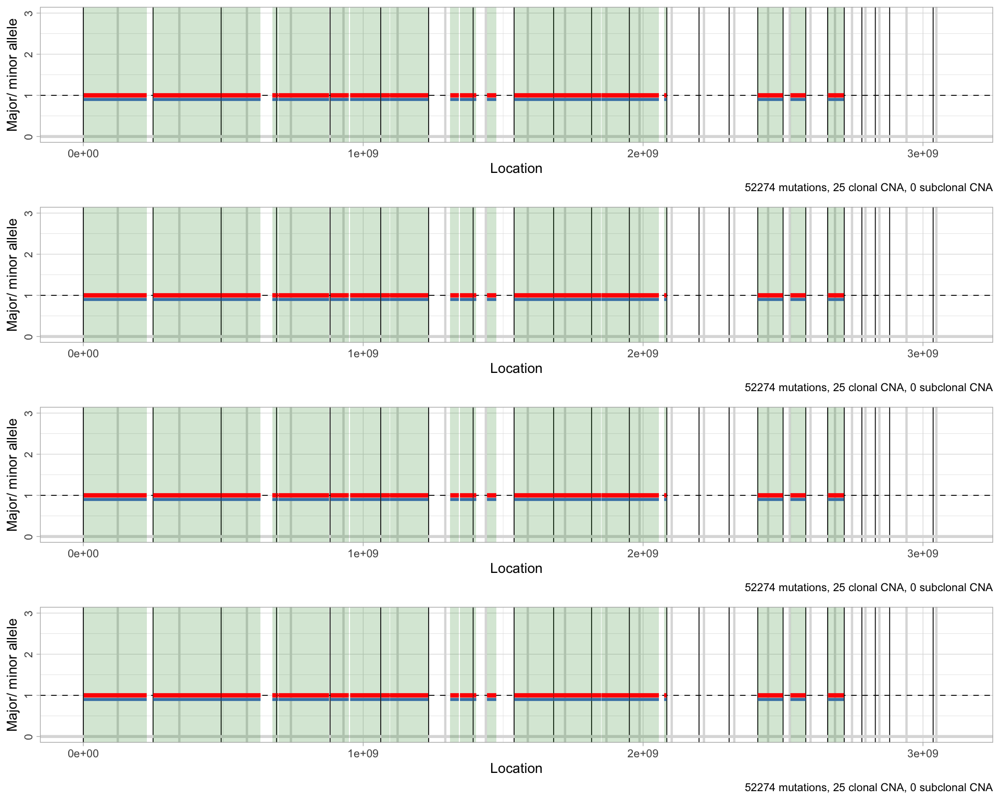

vignettes/Colorectal_Cross.Rmd
Colorectal_Cross.Rmdlibrary(evoverse)
#> [ CNAqc - Copy Number Alteration quality check ]
#> Author : Giulio Caravagna <gcaravagn@gmail.com>
#> GitHub : caravagn/CNAqc
#> WWW : https://caravagn.github.io/CNAqc/
#>
#> > CNAqc is part of the "evoverse" [https://bit.ly/2orn94e] - a collection of packages to implement Cancer Evolution analyses from cancer sequencing data.
#> [ MOBSTER - Model-based clustering in cancer ]
#> Author : Giulio Caravagna <gcaravagn@gmail.com>
#> GitHub : caravagn/mobster
#> WWW : https://caravagn.github.io/mobster/
#>
#> > MOBSTER is part of the "evoverse" [https://bit.ly/2orn94e] - a collection of packages to implement Cancer Evolution analyses from cancer sequencing data.
library(evoverse.datasets)
#>
#> Available datasets ~ use data('xxx', package='REVOLVER_datasets') to load dataset 'xxx'
#>
#> ◉ TRACERx_NEJM_2017 Mutations from TRACERx lung (PMID: 28445112). n = 99 patients, multi-region WES, CCF.
#> ◉ TRACERx_NEJM_2017_REVOLVER REVOLVER analysis of TRACERx_NEJM_2017.
#> ◉ YATES_BREAST_NATMED_2015 Mutations from breast cancers (PMID: 26099045). n = 50 patients, multi-region WES, binary.
#> ◉ CROSS_CRC_ADENOCARCINOMA_NATECOEVO_2018 Mutations from colorectal adenocarcinomas (PMID: 30177804). n = 19 patients, multi-region WES, binary.
#> ◉ MSEQ_CRC_ADENOCARCINOMA_SET6 Mutations, copy number and purity from the Set6 multi-region colorectal adenocarcinoma sample (doi:10.1101/586560). n = 1 patient, multi-region WGS
#> ◉ MSEQ_CRC_ADENOCARCINOMA_SET7 Mutations, copy number and purity from the Set7 multi-region colorectal adenocarcinoma sample (doi:10.1101/586560). n = 1 patient, multi-region WGSThis vignette describes the analysis of the MSeq data released with the paper
The data is also released as Excel Supplementary Table with the paper.
Mutation, copy nunmber ad purity estimates for both analysed multi-region samples - Set6 and Set7 - are part of the data released with the evoverse.datasets package.
# All available data
evoverse.datasets::available_data()
#>
#> Available datasets ~ use data('xxx', package='REVOLVER_datasets') to load dataset 'xxx'
#>
#> ◉ TRACERx_NEJM_2017 Mutations from TRACERx lung (PMID: 28445112). n = 99 patients, multi-region WES, CCF.
#> ◉ TRACERx_NEJM_2017_REVOLVER REVOLVER analysis of TRACERx_NEJM_2017.
#> ◉ YATES_BREAST_NATMED_2015 Mutations from breast cancers (PMID: 26099045). n = 50 patients, multi-region WES, binary.
#> ◉ CROSS_CRC_ADENOCARCINOMA_NATECOEVO_2018 Mutations from colorectal adenocarcinomas (PMID: 30177804). n = 19 patients, multi-region WES, binary.
#> ◉ MSEQ_CRC_ADENOCARCINOMA_SET6 Mutations, copy number and purity from the Set6 multi-region colorectal adenocarcinoma sample (doi:10.1101/586560). n = 1 patient, multi-region WGS
#> ◉ MSEQ_CRC_ADENOCARCINOMA_SET7 Mutations, copy number and purity from the Set7 multi-region colorectal adenocarcinoma sample (doi:10.1101/586560). n = 1 patient, multi-region WGS
# Set7
data('MSEQ_CRC_ADENOCARCINOMA_SET7', package = 'evoverse.datasets')Sneak peek to mutations, copy number, purity data and sample estimates
print(MSEQ_CRC_ADENOCARCINOMA_SET7)
#> $mutations
#> # A tibble: 52,274 x 23
#> chr from to ref alt gene region cosmic function.
#> <chr> <dbl> <dbl> <chr> <chr> <chr> <chr> <chr> <chr>
#> 1 chr1 8.36e7 8.36e7 C T LINC… inter… <NA> <NA>
#> 2 chr16 4.84e7 4.84e7 C A MIR5… ncRNA… <NA> <NA>
#> 3 chr16 4.88e7 4.88e7 G T MIR5… inter… <NA> <NA>
#> 4 chr16 4.89e7 4.89e7 T G MIR5… inter… <NA> <NA>
#> 5 chr16 4.92e7 4.92e7 A C MIR5… inter… <NA> <NA>
#> 6 chr16 4.92e7 4.92e7 T C MIR5… inter… <NA> <NA>
#> 7 chr16 4.92e7 4.92e7 A G MIR5… inter… <NA> <NA>
#> 8 chr16 4.92e7 4.92e7 G A MIR5… inter… <NA> <NA>
#> 9 chr16 4.92e7 4.92e7 C G MIR5… inter… <NA> <NA>
#> 10 chr16 4.92e7 4.92e7 A T MIR5… inter… <NA> <NA>
#> # … with 52,264 more rows, and 14 more variables: mutlocation <chr>,
#> # patient <chr>, Set7_55.VAF <dbl>, Set7_57.VAF <dbl>,
#> # Set7_59.VAF <dbl>, Set7_62.VAF <dbl>, Set7_55.DP <dbl>,
#> # Set7_57.DP <dbl>, Set7_59.DP <dbl>, Set7_62.DP <dbl>,
#> # Set7_55.NV <dbl>, Set7_57.NV <dbl>, Set7_59.NV <dbl>, Set7_62.NV <dbl>
#>
#> $CNA
#> # A tibble: 60 x 11
#> chr from to Set7_55.minor Set7_55.Major Set7_57.minor
#> <chr> <dbl> <dbl> <dbl> <dbl> <dbl>
#> 1 chr1 1.58e6 2.26e8 1 1 1
#> 2 chr1 2.27e8 2.27e8 1 1 0
#> 3 chr1 2.27e8 2.48e8 1 1 0
#> 4 chr2 2.80e5 2.42e8 1 1 1
#> 5 chr3 3.86e5 1.41e8 1 1 1
#> 6 chr3 1.41e8 1.81e8 1 2 1
#> 7 chr3 1.83e8 1.97e8 1 1 1
#> 8 chr4 7.20e5 6.32e6 1 1 1
#> 9 chr4 7.70e6 1.88e8 1 1 1
#> 10 chr5 1.71e6 6.51e7 1 1 1
#> # … with 50 more rows, and 5 more variables: Set7_57.Major <dbl>,
#> # Set7_59.minor <dbl>, Set7_59.Major <dbl>, Set7_62.minor <dbl>,
#> # Set7_62.Major <dbl>
#>
#> $samples
#> [1] "Set7_55" "Set7_57" "Set7_59" "Set7_62"
#>
#> $purity
#> Set7_55 Set7_57 Set7_59 Set7_62
#> 0.88 0.88 0.88 0.80First create a dataset from the evoverse, retaining only diploid chromosomes.
# Diploid segments
segments_karyo_diploid = MSEQ_CRC_ADENOCARCINOMA_SET7$CNA %>%
select(-chr, -from, -to) %>%
apply(1, function(x) all(x == 1))
print(segments_karyo_diploid)
#> [1] TRUE FALSE FALSE TRUE TRUE FALSE TRUE TRUE TRUE TRUE TRUE
#> [12] TRUE TRUE FALSE TRUE FALSE TRUE FALSE TRUE TRUE FALSE TRUE
#> [23] FALSE TRUE TRUE TRUE FALSE TRUE TRUE FALSE TRUE FALSE FALSE
#> [34] FALSE FALSE FALSE FALSE FALSE FALSE FALSE FALSE FALSE FALSE FALSE
#> [45] FALSE FALSE FALSE TRUE FALSE TRUE FALSE TRUE TRUE FALSE FALSE
#> [56] FALSE FALSE FALSE FALSE FALSE
# Actual dataset
Set7 = evoverse::dataset(
mutations = MSEQ_CRC_ADENOCARCINOMA_SET7$mutations,
segments = MSEQ_CRC_ADENOCARCINOMA_SET7$CNA[segments_karyo_diploid, ],
samples = MSEQ_CRC_ADENOCARCINOMA_SET7$samples,
purity = MSEQ_CRC_ADENOCARCINOMA_SET7$purity,
description = "Set7 Sample from MSeq (multi-region WGS ~100x)"
)
#> [ evoverse dataset ]
#> Mutations N = 52274
#> Loading required package: CNAqc
#>
#>
#> =-=-=-=-=-=-=-=-=-=-=-=-=-=-=-=-=-=-
#> Creating CNAqc object for Set7_55
#> =-=-=-=-=-=-=-=-=-=-=-=-=-=-=-=-=-=-
#> [ CNAqc - CNA Quality Check ]
#> [CNAqc] Missing CCF column from CNA calls, adding CCF = 1 assuming all calls to be clonal.
#> Input n = 52274 mutations for 25 CNA segments (25 clonal, 0 subclonal)
#> Mapped. n = 52274 mutations mapped to clonal segments (~100% of input)
#>
#> =-=-=-=-=-=-=-=-=-=-=-=-=-=-=-=-=-=-
#> Creating CNAqc object for Set7_57
#> =-=-=-=-=-=-=-=-=-=-=-=-=-=-=-=-=-=-
#> [ CNAqc - CNA Quality Check ]
#> [CNAqc] Missing CCF column from CNA calls, adding CCF = 1 assuming all calls to be clonal.
#> Input n = 52274 mutations for 25 CNA segments (25 clonal, 0 subclonal)
#> Mapped. n = 52274 mutations mapped to clonal segments (~100% of input)
#>
#> =-=-=-=-=-=-=-=-=-=-=-=-=-=-=-=-=-=-
#> Creating CNAqc object for Set7_59
#> =-=-=-=-=-=-=-=-=-=-=-=-=-=-=-=-=-=-
#> [ CNAqc - CNA Quality Check ]
#> [CNAqc] Missing CCF column from CNA calls, adding CCF = 1 assuming all calls to be clonal.
#> Input n = 52274 mutations for 25 CNA segments (25 clonal, 0 subclonal)
#> Mapped. n = 52274 mutations mapped to clonal segments (~100% of input)
#>
#> =-=-=-=-=-=-=-=-=-=-=-=-=-=-=-=-=-=-
#> Creating CNAqc object for Set7_62
#> =-=-=-=-=-=-=-=-=-=-=-=-=-=-=-=-=-=-
#> [ CNAqc - CNA Quality Check ]
#> [CNAqc] Missing CCF column from CNA calls, adding CCF = 1 assuming all calls to be clonal.
#> Input n = 52274 mutations for 25 CNA segments (25 clonal, 0 subclonal)
#> Mapped. n = 52274 mutations mapped to clonal segments (~100% of input)
#> Non-mappable mutations per chromosome 0
print(Set7)
#> [ mvMOBSTER dataset ]
#> Dataset Set7 Sample from MSeq (multi-region WGS ~100x)
#> Samples Set7_55, Set7_57, Set7_59, Set7_62
#> Purities 0.88, 0.88, 0.88, 0.8
#> Mutations N = 52274
#>
#> MOBSTER analysis FALSE
#> VIBER analysis FALSE
#>
#> =-=-=-=-=-=-=-=-=-=-
#> LOGGED OPERATIONS
#> =-=-=-=-=-=-=-=-=-=-
#> # A tibble: 1 x 2
#> time operation
#> <dttm> <chr>
#> 1 2019-11-12 13:46:19 InitializationBasic information can be accessed through the other functions of the evoverse packages. For instance, you can visualise CNA data through the CNAqc package.
# Example CNA rofiles with CNAqc
print(Set7$CNAqc$Set7_55)
#> CNAqc n = 52274 mutations for 25 CNA segments (25 clonal, 0 subclonal)
#> Purity 88% cellularity
#> Karyotypes 52274 (1:1)
#>
#> Peaks QC FALSE
#> CCF FALSE
# CNA segments plot
ggpubr::ggarrange(
plotlist = lapply(Set7$CNAqc, function(x) { CNAqc::plot_segments(x) + ylim(0, 3) }),
ncol = 1,
nrow = 4
)
We can print also the VAF of the annotated mutations, in both 2D and 1D type of plots using evoverse.
# plot by default is 2D
ggpubr::ggarrange(
plotlist = plot(Set7),
ncol = 3,
nrow = 2
)
#> Plotting plain data - use clusters = {'MOBSTER', 'VIBER'} to plot clusters# Using evoverse plot_1D_VAF (1D)
ggpubr::ggarrange(
plotlist = lapply(Set7$samples, evoverse::plot_1D_VAF, x = Set7),
ncol = 2,
nrow = 2
)The following steps can be run to analyse the cohort (here, they are not run). On a standard laptop this analysis takes about 10 minutes.
# MOBSTER analysis with default parameters
Set7 = evoverse::analyze_mobster(Set7)
# Save results
save(Set7, file = "MOBSTER_Set7_fits.RData")
# Plots of model selection that can be saved as PDF
figure = lapply(Set7$fit_MOBSTER, mobster::plot_model_selection)
pdf("MOBSTER_Set7_fits.pdf", width = 11, height = 9)
lapply(figure, print)
dev.off()
# Remove tail mutations and replot the data
Set7_notail = filter_tails(Set7)
plot(Set7_notail)
# VIBER clustering of Binomial mixtures for non-tail mutations
Set7_notail = evoverse::analyze_VIBER(Set7_notail, K = 7, alpha_0 = 1e-06, max_iter = 200)
save(Set7_notail, file = 'MOBSTER_VIBER_Set7_fits.RData')
# Plot
pdf("MOBSTER_VIBER_Set7_fits_raw.pdf", width = 4, height = 3)
lapply(plot(Set7_notail, clusters = 'VIBER'), print)
dev.off()
# Apply heuristic (default parameters for instance) and replot
reduced_mv = VIBER::choose_clusters(Set7_notail$fit_VIBER)
pdf("MOBSTER_VIBER_Set7_fits_heuristics.pdf", width = 4, height = 3)
lapply(VIBER:::plot.vb_bmm(reduced_mv), print)
dev.off()For comparison, run this.
# VIBER clustering of Binomial mixtures for all mutations
Set7_standard = evoverse::analyze_VIBER(Set7, K = 9, alpha_0 = 1e-06, max_iter = 200)
save(Set7_standard, file = 'VIBER_Set7_fits.RData')
# Plot
pdf("VIBER_Set7_fits_raw.pdf", width = 4, height = 3)
lapply(plot(Set7_standard, clusters = 'VIBER'), print)
dev.off()
# Apply heuristic (default parameters) and replot
reduced_mv = VIBER::choose_clusters(Set7_standard$fit_VIBER)
pdf("VIBER_Set7_fits_heuristics.pdf", width = 4, height = 3)
lapply(VIBER:::plot.vb_bmm(reduced_mv), print)
dev.off()